规则
- 正文里不放色块按钮。所有操作都在底部玻璃胶囊里，只用图标。
- 胶囊左边是通用操作：收藏、标签、稍后读，ink。竖线之后是这张卡片自己的操作，最多 3 个，accent。
- 邮件「回复」；文章、视频、播客「去原文」；日程「加入」（快开始时）、「在 Sill 内再提醒」、「下载日程」；提醒和待办「在 Sill 内再提醒」、「忽略此提醒」。
- 名称在 aria-label。触屏长按显示在图标上方（ink 底、card 字），这次按下不执行；鼠标悬停 0.5 秒显示。
- 提醒的「完成」是标题前的圆圈，和卡面同一个控件，只改 Sill。
- 关闭圆钮与来源行居中对齐，标题占满宽度。没有值的日期不显示，日期和来源备注收成一行。
- 手机：正文最后一行到胶囊 26px，胶囊到底边 max(8px, 安全区)。打开方式不变，仍是从下往上的抽屉。
- 设置「桌面」页的「卡片操作」可以关掉任何一个操作（hiddenActions），只影响显示。
- 九个图标按「线条积木」重画：圆角方块、地平线（窗台）、一小段「窗」短线；线宽不变。
手机 390 · 各类卡片
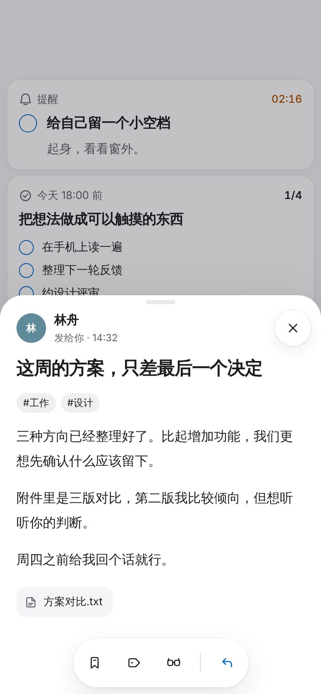
邮件：通用三项｜回复
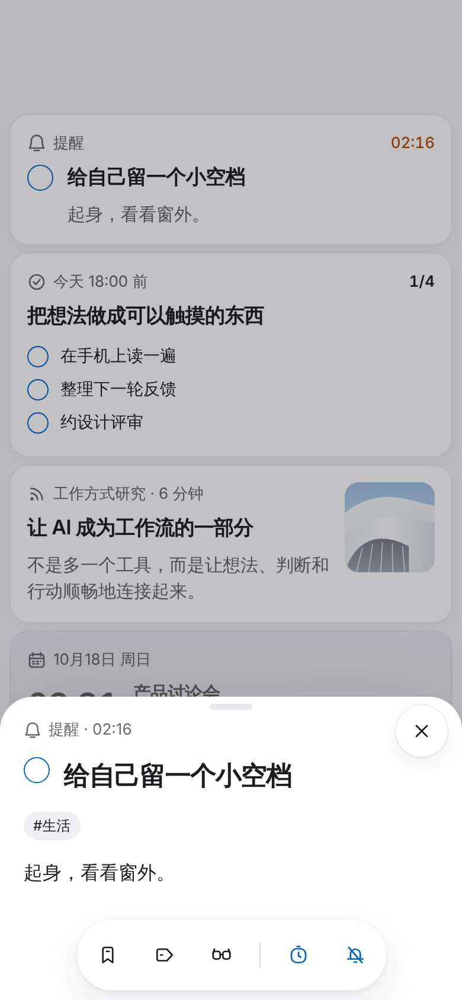
提醒：圆圈完成｜再提醒、忽略
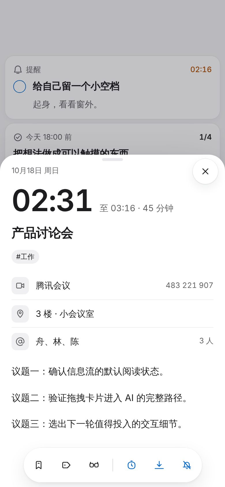
日程：通用三项｜再提醒、下载、忽略
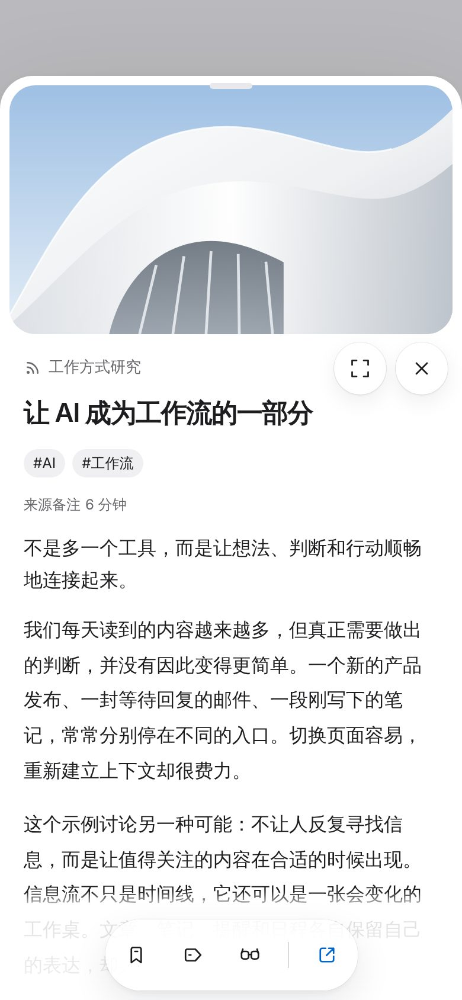
文章：通用三项｜去原文
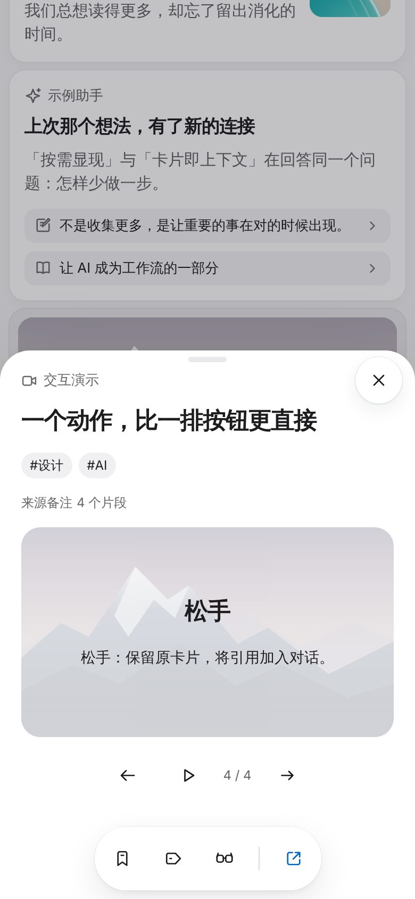
视频：通用三项｜去原文
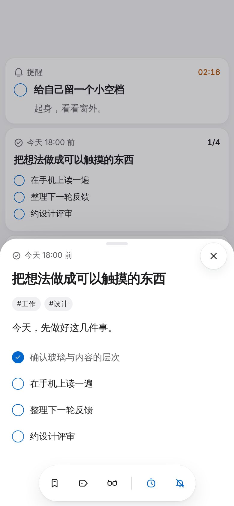
待办：通用三项｜再提醒、忽略
手机 390 · 名称、设置与深色
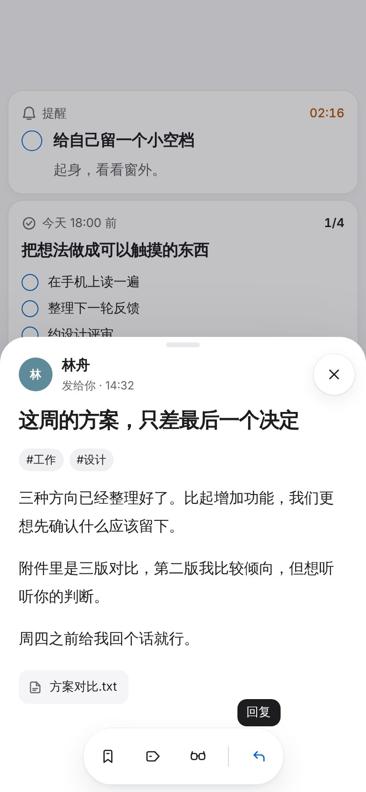
长按图标：显示名称
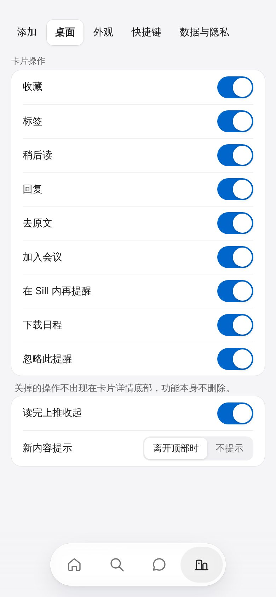
设置 · 卡片操作
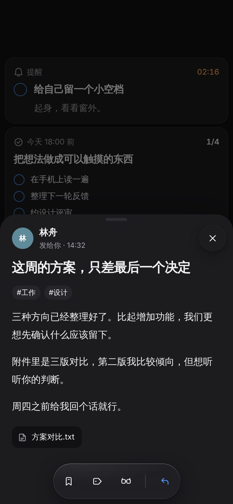
深色
桌面 1440 · 预览
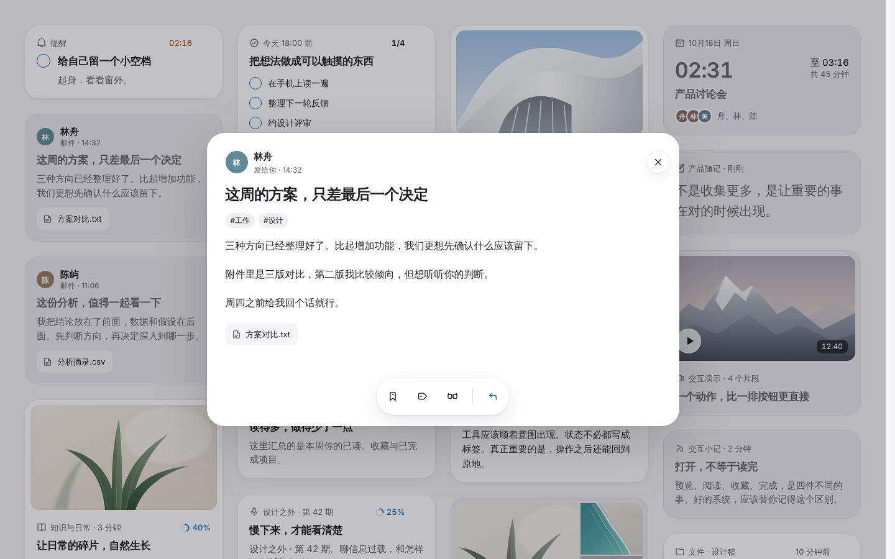
桌面预览：同一个胶囊和分组
图标 · 线条积木
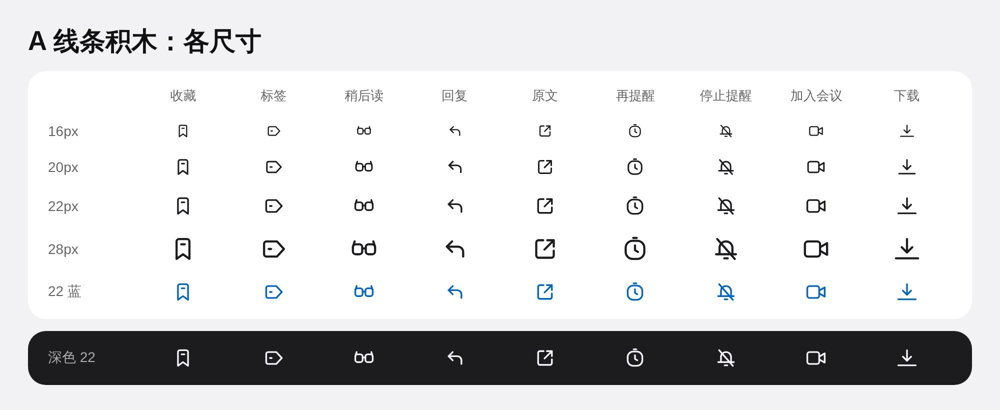
收藏、标签、稍后读、回复、原文、再提醒、停止提醒、加入会议、下载：16、20、22、28px，蓝色与深色